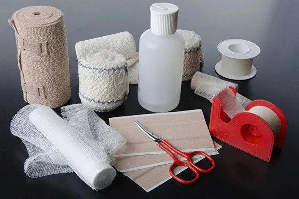

Expanded Nursing Uganda Explanation
Dressings and Bandaging should be understood beyond a short definition. Link the concept to patient history, focused assessment, common risks, nursing priorities, documentation and evaluation of outcomes.
01 Orthopedic Care
Orthopedic care is concerned with preventing, recognizing, and treating injuries, diseases, and ailments that affect the musculoskeletal system of the body .
This system consists of muscles, tendons, ligaments, and other connective tissues that enable a human being to perform physical activity.
Orthopedic care involves treating common problems such as;
1. Musculoskeletal Trauma :
- Fractures: Broken bones ranging from simple hairline fractures to complex compound fractures.
- Dislocations : Displacement of bones from their normal joint positions.
- Sprains and Strains: Injuries involving ligaments (sprains) and muscles/tendons (strains).
- Soft Tissue Injuries : Bruises, contusions, lacerations, and other damage to muscles, ligaments, and tendons.
2. Sports Injuries :
- ACL Tears : Tears in the anterior cruciate ligament, often occurring during pivoting or sudden stops.
- Rotator Cuff Tears : Tears in the muscles and tendons surrounding the shoulder joint.
- Hamstring Injuries : Muscle strains or tears in the hamstring muscles at the back of the thigh.
- Achilles Tendinitis : Inflammation of the Achilles tendon, commonly seen in athletes.
3. Degenerative Diseases :
- Osteoarthritis : A common condition characterized by wear and tear on joint cartilage.
- Rheumatoid Arthritis : An autoimmune disease causing inflammation in the joints.
- Spinal Stenosis : Narrowing of the spinal canal, often causing pain, numbness, and weakness.
- Osteoporosis : Weakening of the bones, making them more prone to fractures.
4. Infections :
- Osteomyelitis : An infection of the bone, often requiring antibiotics or surgery.
- Septic Arthritis : An infection within a joint, causing pain, swelling, and redness.
- Tendonitis : Inflammation of a tendon, which can be caused by infection or overuse.
5. Tumors :
- Bone Cancer: Malignant tumors that develop in the bones, requiring treatment with surgery, chemotherapy, or radiation.
- Benign Bone Tumors : Non-cancerous growths that can cause pain or pressure.
6. Congenital Disorders :
- Scoliosis : A sideways curvature of the spine.
- Clubfoot : A condition where the foot is turned inward at birth.
- Hip Dysplasia : A condition where the hip joint doesn’t develop properly.
7. Other Common Orthopedic Issues :
- Back Pain : A widespread issue that can be caused by a variety of factors, including muscle strain, spinal problems, and disc herniation.
- Carpal Tunnel Syndrome : A condition affecting the median nerve in the wrist, causing numbness and tingling in the hand.
- Knee Pain : Can be caused by osteoarthritis, injuries, or overuse.
- Shoulder Pain : Can be caused by rotator cuff tears, arthritis, or nerve compression.
02 Orthopedic Techniques
- Dressings and Bandaging
- Traction
- Splints
- Non-surgical procedures
- Surgical procedures (such as ligament repair)
A dressing is a sterile material applied to a wound or surgical site to promote healing and protect it from infection or further injury.
A dressing is any protective cover for the wound . It is usually a cotton material.
Uses of Dressings
- Protection from Infection : Dressings act as a barrier to prevent microbial contamination.
- Control Bleeding : Dressings can help apply pressure to a wound, assisting in controlling bleeding.
- Absorption of Discharge : They are designed to absorb any fluid or discharge from the wound, reducing the risk of infection and promoting a healthy healing environment.
- Prevent Further Injury : Dressings help protect the wound from external impacts and irritants, preventing further injury to the area.
- Moisture Management : Dressings help maintain a moist wound environment, which can enhance healing.
- Pain Reduction : Certain dressings can provide cushioning and support around a wound, reducing discomfort.
- Promotion of Healing : Some dressings contain agents that promote healing, such as growth factors or antimicrobial treatments.
General Rules for Applying Dressings
- Wash your hands thoroughly before and after applying the dressing, whenever possible.
- If the wound is not too large and bleeding is under control, clean it and the surrounding skin before applying the dressing.
- Avoid touching the wound or any part of the dressing that will be in contact with the wound.
- Never talk or cough over a wound or the dressings.
- If necessary, cover non-adhesive dressings with cotton wool pads and a bandage to control bleeding and absorb discharge.
- Use a swab soaked in antiseptic or disinfectant to clean the wound only once.
- If the dressing slips over a wound before it is fixed in place, discard it and use a fresh one, as the first may have picked up germs from the surrounding skin.
- Always place dressings directly onto the wound. Never slide it in from the side.
A bandage is a piece of gauze or cloth material used for any of the purposes to support, hold or to immobilize any part of the body.
A bandage is a strip of material (such as cloth or elastic) used to secure, support, or protect a dressing or injured area .
Bandaging is a technique of application of specific roller bandages to different parts of the body .
Bandaging refers to the process of applying a bandage to a wound or injured body part.
Purposes of Bandaging
- To Cover and Retain Dressings: Bandages help keep dressings securely in place, ensuring proper protection for the wound.
- To Protect a Wound : They offer a barrier against dirt, bacteria, and other contaminants that can lead to infection.
- To Support Injuries : Bandages provide support for injured areas, such as sprains, aiding in immobilization and stability.
- To Compress : They apply pressure to control bleeding or reduce swelling by compressing the affected area.
- To Secure Dressings: Bandages keep dressings in place, ensuring that the wound is adequately protected and that the dressing functions effectively.
- To Immobilize Fractures : Certain bandages, such as plaster of Paris casts, immobilize fractures, allowing them to heal properly.
- To Control Bleeding: Bandages help apply pressure to a wound, assisting in controlling bleeding.
- To Restrict Movement : Bandages can limit movement in injured areas, promoting healing and reducing pain.
03 Types of Bandages
1. Triangular Bandages: This type of bandage is used in emergency treatment and first aid. It can be utilized for:
- Head Bandage: Used to cover and protect head injuries.
- Sling : Provides support for an injured arm.
2. Roller Bandages: Long strips of cloth or elastic material rolled up for easy application. They can be used to apply compression and secure dressings in various ways:
- Circular : Applied in circles around the wound.
- Spiral : Wrapped in a spiral manner to cover the area.
- Recurrent : Used to cover areas like the stump of an amputated limb.
3. Plaster Bandages : Made from plaster of Paris, these bandages immobilize fractures of bones, providing necessary support during healing.
4. Adhesive Bandages: These are used for fractures at the clavicle bone, providing support and securing the area.
5. Gauze Bandages : Made of woven or non-woven fabric, these bandages are used to cover wounds and absorb exudate.
6. Crepe Bandages : These elastic bandages allow for a degree of stretch when applied, determining the amount of pressure they exert. They are widely used for sprains and strains.
- Rule/Step Rationale
- 1 Use a tightly rolled bandage of suitable width and material. To promote neatness and efficiency.
- 2 Face the patient when bandaging limbs. To observe the patient’s facial expression.
- 3 Hold the head of the bandage uppermost. To apply even pressure and tension.
- 4 Bandage the limb well aligned in an anatomical position. To prevent deformity and discomfort.
- 5 Hold the bandage in the right hand when bandaging a left limb and vice versa. To promote correct bandaging.
- 6 Bandage the limb from inside outwards and from below upwards, keeping the bandage even throughout. To ensure proper coverage and support.
- 7 Ensure that the bandage is neither too tight nor too loose. To prevent interference with circulation and avoid slippage if loose.
- 8 Finish off the bandage with a straight turn, fold in the end and secure avoiding joints and the site of injury. To prevent localized pressure, irritation, and discomfort.
- 9 Fasten with safety pins or with the provided fastener. To prevent loosening of the bandage.
- 10 Apply tape in psychiatric, mentally handicapped, or pediatric patients instead of pins or other sharp appliances. To prevent injury.
****
- Material Description
- Cotton Heavy weaves are used for slings, thin porous ones from open weave bandages which are cheap, light, and disposable. Firmer ones with a fast edge can be washed repeatedly.
- Domette This woven material with a slightly fluffed surface makes a firm supporting bandage, which has some resilience but can be used to give firm support.
- Crepe These bandages are elastic, and the degree to which they are stretched when applied determines the amount of pressure they exert. They are widely used.
- Plaster Plaster muslin is the basis for making plaster of Paris bandages.
- Stockinet Used beneath plaster.
- Proprietary Tubular Material Such as tube gauze or Hetelast.
Bandaging patterns refer to the specific techniques used to apply bandages effectively to secure dressings, support injured areas, and control bleeding . The choice of pattern depends on the location and type of injury, as well as the desired outcome (e.g., compression, immobilization).
Figure of eight: This pattern wraps the bandage in a figure-eight shape around the joint, creating a shape that stabilizes while still allowing for mobility.
Use : Mainly used for bandaging joints such as the knee, ankle, or elbow to provide support while allowing limited movement.
- Steps Action Rationale
- A. Figure of Eight
- 1 Observe general rules of all nursing procedures. To maintain standards.
- 2 Put the patient in a comfortable position exposing the affected part. To promote comfort, circulation, and prevent deformity.
- 3 Hold bandage with the drum facing upwards. Allows application of even tension and pressure.
- 4 Wrap bandage around the limb twice below the joint. To stabilize the bandage and provide firmness.
- 5 Use alternating ascending and descending turns to form a figure of eight; overlap each turn by one half to two-thirds the width of the strip. To promote venous return and reduce edema.
- 6 Wrap bandage around the limb twice, above the joint to anchor it and secure it with a clip or safety pin. To prevent venous complications early.
- 7 Elevate the bandaged extremity for 15 to 30 minutes after application of bandage. To promote venous return and reduce edema.
- 8 Assess the skin for color, integrity, pain, and temperature. To detect complications early.
- 9 Leave the patient comfortable and clear away. Maintain standards.
- B. Spiral Bandaging (e.g., bandaging the ear)
- 1 Make a fixing turn around the head. As above.
- 2 Bring the bandage under the ear and straight over the head and down the back, leaving the other ear unbandaged. To provide comfort.
- 3 Repeat these turns three or four times until the affected ear is gradually covered. As above.
- 4 Finish with a fixing turn and secure the bandage at the center of the forehead using a safety pin or tape. To stabilize the bandage.
- C. Divergent Spica (pattern used to cover a dressing wound at a fixed joint e.g., knee, heel, or elbow)
- 1 Make two turns over the center of the joint. To stabilize the joint.
- 2 Now make alternate turns above and below these turns forming a pattern at each side of the joint. To provide support and stability.
- D. Triangular Bandaging (Arm sling)
- 1 Place the injured arm across the patient’s chest so that the fingers almost touch the opposite shoulder. To mobilize and relieve pain.
- 2 Place one corner of the bandage over the uninjured part with the right angled corner just above the level of the elbow of the injured side. Proper alignment of the arm.
- 3 Tuck the other end of the bandage well beneath the forearm and elbow.
- 4 Carry the remaining ends around the neck and tie the ends with a reef knot, which lies in the hollow above the clavicle on the injured side.
- 5 The right angle is folded and pinned to enclose the elbow.
- 6 Place a pad under the knot if it seems likely to cause pressure. To prevent skin irritation.
- E. Bandaging the Eye
- 1 Facing the patient, hold the eye pad in position until the bandage covers it. To secure the bandage.
- 2 Begin from the affected side to the normal side across the forehead and round the head in a fixing turn, then from the back of the head the bandage comes under the eye, covering the nasal side of the pad and straight over the head and down the back.
- 3 The next turn comes under the ear, overlaps the eye turn, crosses the fixing turn at the same point as the other, then overlaps it crosses the head and comes round to the front.
- 4 Fix a pin should be in the center of the forehead.
- F. Capeline Bandage (Use a double-headed roller bandage)
- 1 Position patient in sitting up position and stand behind the patient. To promote convenience to apply the head bandage.
- 2 Place the center of the outer surface of the bandage in the center of the forehead.
- 3 Bring the head of the bandage around over the temples and above the ears to the nape of the neck when the ends are crossed. Ensure that the ear is not covered.
- 4 Bring the upper bandage around the head and the other head of the bandage over the center of the top of the scalp and then to the root and nose. To ensure firmness and neatness.
- 5 Bring the bandage which circles the victim’s head over the fore head covering and fixing the bandage which crosses the scalp. The bandage is then brought back over the scalp.
- 6 Ensure that each turn of the bandage covers 2/3 of the previous turn. Adheres snugly to the body part.
- 7 Cross it again at the back and fix it using encircling bandage and turn back over the scalp to the opposite side at the central line covering the other margin of its original turn.
- 8 Repeat the back and forward turns to alternate side of the center, each one begin in front by the encircling bandage until the whole scalp is covered.
- G. Recurrent Bandaging
- 1 Overlap each layer of bandage by half to two-thirds the width of the strip; wrap firmly but not tightly as you work, ask the patient if it feels comfortable. Loosen the bandage if there is tingling, itching, numbness, or pain. To provide firmness.
- 2 Stand facing the patient and take a fixing turn. To observe the facial expression.
- 3 Carry the bandage upward across the front of the limb at 45° rounds behind it at the same level and downwards over the front to cross the first turn at a right angle. To provide firmness and neatness.
- 4 Repeat these turns until the limb has been sufficiently covered.
04 ORTHOPAEDIC SPLINTS
Orthopaedic splints are medical devices used to immobilize, support, or protect a broken, fractured, or injured limb or joint .
They are made from materials such as plaster, fiberglass, or various synthetic materials, and can be either rigid or flexible. Splints are designed to prevent movement in the injured area, thereby facilitating healing and preventing further injury.
Following the diagnosis of an unstable injury, a splint may be the best treatment option and is defined as an external device used to immobilize an injury or joint and is most often made out of plaster.
A splint must be differentiated from a cast, to determine the best form of immobilization based on the clinical scenario. Contrary to a splint, a cast is a circumferential application of plaster that rigidly immobilizes a particular joint or fracture. Because of their circumferential restrictive nature, casts are not placed in the acute post-injury setting as they do not accommodate for soft tissue swelling.
Splints are placed to immobilize musculoskeletal injuries, support healing, and prevent further damage. The indications for splinting are broad but commonly include:
- Temporary stabilization of acute fractures, sprains, or strains before further evaluation or definitive operative management.
- Immobilization of a suspected occult fracture (such as a scaphoid fracture).
- Severe soft tissue injuries requiring immobilization and protection from further injury.
- Definitive management of specific stable fracture patterns.
- Peripheral neuropathy requiring extremity protection.
- Partial immobilization for minor soft tissue injuries.
- Treatment of joint instability, including dislocation.
- Fractures to stabilize broken bones, ensuring proper alignment during healing.
- Post-surgical immobilization following orthopedic procedures to maintain healing and alignment.
- Dislocations to stabilize a joint until it can be properly repositioned and treated.
- Tendon injuries to immobilize the area for healing.
- Chronic pain conditions, such as carpal tunnel syndrome, where splints alleviate pain by providing support.
- Bone stabilization in pediatric patients for fractures where traditional casting may be impractical.
- Temporary stabilization before surgery to prepare the area for intervention.
Indications for Splinting
Splints are used in various musculoskeletal conditions to immobilize injuries, support healing, and prevent further trauma . The most common indications include:
- Condition Purpose of Splinting
- Acute fractures, sprains, or strains Provides temporary stabilization before further evaluation or surgery.
- Occult fractures (e.g., scaphoid fracture) Immobilization of suspected fractures that may not appear on initial imaging.
- Severe soft tissue injuries Prevents further injury and allows proper healing.
- Stable fractures Can serve as definitive treatment in specific fracture patterns.
- Peripheral neuropathy Protects affected extremities from accidental trauma.
- Minor soft tissue injuries Partial immobilization to reduce pain and movement.
- Joint instability (e.g., dislocations) Prevents excessive motion and supports joint recovery.
Before applying a splint, it is essential to gather and organize all necessary materials:
- Equipment Purpose
- Sheet or towel Protects patient’s clothing.
- Stockinette Soft stretchable fabric placed under the splint for skin protection.
- Under-cast padding (cotton padding) Provides cushioning and prevents skin irritation.
- Plaster or padded fiberglass Forms the rigid supportive structure of the splint.
- Water bucket (cool water) Activates plaster or fiberglass materials.
- Elastic bandage Secures the splint in place while allowing for swelling.
- Sling (for upper extremity injuries) Supports the injured limb.
- C-arm X-ray (if fracture reduction is attempted) Confirms proper alignment of fractured bones before splint application.
05 Pre-Splinting Preparation
Ensure adequate pain management – Provide analgesia or sedation as necessary to promote muscle relaxation and facilitate fracture reduction . Address soft tissue injuries – Clean and dress any open wounds before applying the splint. Prepare the affected area – Apply a stockinette circumferentially around the injury, ensuring it extends beyond the splinting area to protect the skin.
06 Splint Application Process
Pad bony prominences (e.g., elbow, knee, calcaneus) with 1–2 cm of soft padding to prevent pressure sores or necrosis. Apply 2–3 layers of cast padding (0.25 cm to 0.5 cm) to provide additional cushioning. Reduce any fracture by restoring bone length, alignment, and rotation (radiographic confirmation may be required). Activate plaster or fiberglass sheets by saturating them in cool water . Layer and laminate the splinting material , pressing the sheets together to increase strength . Mold the splint around the injured area, ensuring proper support and resistance to deforming forces . Do not completely encircle the limb – Splints must accommodate for swelling . If circumferential overlap occurs, the splint should be cut open after setting . Fold the stockinette edges over the splint to protect the skin from sharp plaster or fiberglass edges. Secure the splint with an elastic bandage – Apply it loosely to hold the splint in place while allowing for soft tissue expansion. Avoid direct contact with the skin. Reassess the patient’s neurovascular status – Check for pulses, capillary refill, sensation, and motor function . Any compromise requires immediate splint removal and reassessment . 11. Educate the patient about splint care, warning signs (e.g., numbness, swelling, pain), and follow-up instructions.
Splints are categorized based on their location and function .
Common Upper Extremity Splints
- Splint Type Indication
- Coaptation Splint Used for humeral fractures, preventing excessive movement.
- Sugar Tong Splint Immobilizes the forearm and prevents wrist/elbow rotation.
- Posterior Long Arm Elbow Splint Used for elbow dislocations and fractures.
- Ulnar Gutter Splint Supports 4th and 5th metacarpal fractures (boxer’s fracture).
- Radial Gutter Splint Immobilizes fractures of the 2nd and 3rd metacarpals.
- Volar/Dorsal Short Arm Splint Used for wrist sprains and carpal bone fractures.
- Thumb Spica Splint Commonly used for scaphoid fractures and thumb injuries.
Common Lower Extremity Splints
- Splint Type Indication
- Posterior Long Leg Splint Used for tibial fractures, knee ligament injuries.
- Posterior Short Leg Splint Immobilizes ankle fractures and foot injuries.
- Posterior Short Leg Splint with Stirrups Provides added stability for ankle fractures and severe sprains.
Although splints are effective in immobilizing injuries , they can lead to complications if not applied correctly .
- Complication Cause & Risk Factors
- Loss of fracture reduction Movement or improper molding of the splint may cause the fracture to shift out of alignment.
- Skin irritation or breakdown Inadequate padding or excessive pressure may result in skin ulcers or irritation.
- Joint stiffness Prolonged immobilization can lead to decreased range of motion.
- Thermal injury Plaster generates heat when setting, and excessive layers may cause burns.
- Neurovascular compromise Tight splints may cause acute carpal tunnel syndrome or nerve compression.
- Compartment syndrome If a splint becomes circumferential (like a cast), it may increase pressure, leading to vascular compromise and tissue ischemia.
07 Traction
Click Here
08 Nursing Uganda Clinical Lens
Use Care of patients on traction as a practical nursing topic, not only a memorized definition. Connect structure, movement, pain, circulation, nerve function and safe mobility.
- What to understand first: define care of patients on traction, identify the normal or expected pattern, then explain what changes when the patient is unwell.
- Why it matters in care: the nurse must recognize risk early, explain findings clearly, document accurately and know when to escalate.
- How to revise it: connect each point to assessment, nursing diagnosis or care problem, intervention, rationale and evaluation.
09 Assessment Guide
- Pain score, site, onset, deformity, swelling, bruising and ability to move.
- Distal pulse, capillary refill, colour, warmth, sensation and movement.
- Skin integrity, wounds, cast tightness, traction alignment and pressure areas.
10 Nursing Priorities, Rationales and Outcomes
- Immobilize and protect the affected part while preventing further injury.
- Control pain and swelling while monitoring neurovascular status.
- Prevent complications such as compartment syndrome, infection, pressure injury and venous stasis.
The rationale for these priorities is patient safety: nursing actions should prevent deterioration, reduce discomfort, support recovery and create clear evidence for the next caregiver.
- Expected outcome: Pain is reduced, circulation and sensation remain intact, swelling is controlled and the patient mobilizes safely within the care plan.
11 Patient Teaching and Revision Check
- Explain care of patients on traction in simple language the patient or caregiver can repeat back.
- Teach warning signs, medicine or follow-up instructions, hygiene or lifestyle points where relevant.
- For exams, prepare a short answer using: definition, causes or risk factors, signs, assessment, management, complications and prevention.
- For ward practice, document baseline findings, actions taken, patient response and the plan for review.
Illustrations and Diagrams (1)

Related Video Lectures
Watch nursing lecture videos on YouTube for this topic. Opens in a new tab.
Watch on YouTubeExternal link: YouTube may use its own cookies and terms. Nursing Uganda is not affiliated with YouTube.